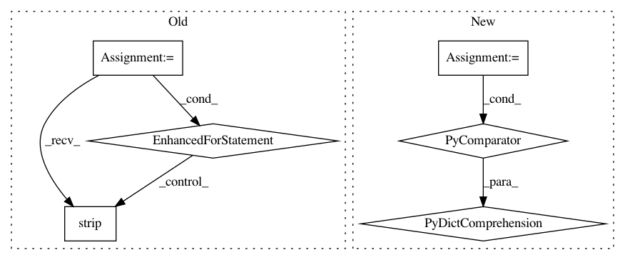

144aa65949d84526980d53ad1434d0a6ae9cba27,scattertext/TermDocMatrixFactory.py,TermDocMatrixFactory,_get_features_from_parsed_text,#TermDocMatrixFactory#Any#Any#,247
Before Change
def _get_features_from_parsed_text(self, parsed_text, term_idx_store):
term_freq = Counter()
for sent in parsed_text.sents:
unigrams = []
for tok in sent:
if tok.pos_ not in ("PUNCT", "SPACE", "X"):
if tok.ent_type_ in self._entity_types_to_censor:
unigrams.append(tok.ent_type_)
else:
if self._use_lemmas:
if tok.lemma_.strip():
unigrams.append(tok.lemma_.strip())
else:
if tok.lower_.strip():
unigrams.append(tok.lower_.strip())
bigrams = list(map(" ".join, zip(unigrams[:-1], unigrams[1:])))
self._augment_term_freq_with_unigrams_and_bigrams(bigrams, term_freq, term_idx_store, unigrams)
return term_freq
def _augment_term_freq_with_unigrams_and_bigrams(self, bigrams, term_freq, term_idx_store, unigrams):
for term in unigrams + bigrams:
After Change
X_factory[doci, word_idx] = freq
def _get_features_from_parsed_text(self, parsed_text, term_idx_store):
return {term_idx_store.getidxstrict(k):v for k, v
in self._feats_from_spacy_doc.get_feats(parsed_text).items()
if k in term_idx_store}
class FeatsFromDoc(TermDocMatrixFactory):
In pattern: SUPERPATTERN
Frequency: 3
Non-data size: 6
Instances
Project Name: JasonKessler/scattertext
Commit Name: 144aa65949d84526980d53ad1434d0a6ae9cba27
Time: 2017-01-24
Author: jason.kessler@gmail.com
File Name: scattertext/TermDocMatrixFactory.py
Class Name: TermDocMatrixFactory
Method Name: _get_features_from_parsed_text
Project Name: Hironsan/anago
Commit Name: c12740b64e69e8383144d0f36a138bf033a9b074
Time: 2017-08-01
Author: light.tree.1.13@gmail.com
File Name: anago/data_utils.py
Class Name:
Method Name: load_vocab
Project Name: dpressel/mead-baseline
Commit Name: 2e220e669fb099091a5f645cb63d50d55b07cb33
Time: 2019-04-17
Author: blester125@users.noreply.github.com
File Name: api-examples/tag-text.py
Class Name:
Method Name: